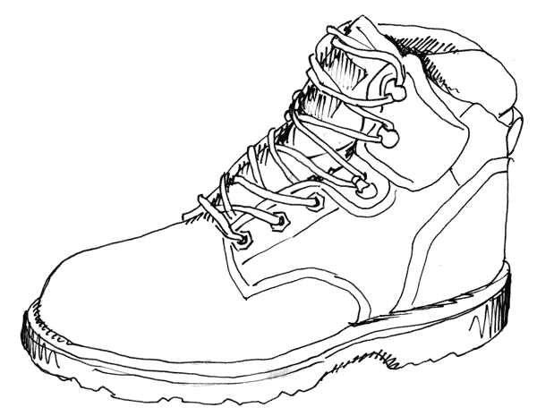
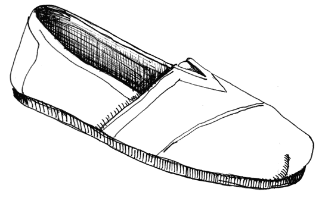

From:
to:
I had thought about my carbon footprint before, but had never taken the time to do a calculation. For a class based around the idea of sustainability I had to do one, and based on the variety of answers that I ended up with this is not an easy calculation to make. However, any sort of starting point gives you the option to make an impact.
I took my sampling of results, averaged those, and that is what I am using as my information for this page. Included are all of the calulators that I used, and other resources that helped me in my interpretation of the data, and implementing a difference in my personal net carbon emissions.
My lifestyle would be pretty low on the scale, and it is, but it still is not really "good." For reference I do not have a car, I bike everywhere, I live in a 1,000 sq. ft 1bedroom apartment with my girlfriend, I choose organics and buy as local as possible, and genuinely care about "green" things.
My initial output was:
(Images will be here as well)
broken down into these areas:
(Images will be here as well)
These are elements that I decided that I could do in the short term, as well as what I plan over the longer term. The following list and images show large scale changes that have a signifigant change, and what that change is (like switching to renewable energy), and also general shifts that have an effect, but perhaps not easily measurable.
-
CFLs
I switched as many bulbs as possible to CFLs. A few installed lamps use the little candlabra bulbs, those are all that are left as old fashioned incandescants. -
Clean Currents
I switched the source of my power to renewable wind from West Virginia.
The following lists give places you can calculate your own footprint, as well get information about reducing your impact. I plan on keeping this up to date, but realize that some of the resources will be limited to the Minnesota and Maryland areas as those are the places I have lived recently and have the most information for.
- Footprint Calculators:
- An Inconvenient Truth
- BP
- Carbon Footprint
- Carbon Fund
- Carbon Counter
- Clear Offset
- Conservation International
- Earth Day
- Eco Neutral
- Empowerment Institute
- EPA
- Native Energy
- Nature Conservatory
- Safe Climate
- Sterling Planet
- Terra Pass
- WWF
- Yahoo
- Things You can Do:
- lists...
There are some issues with the project, as with anything. I am planning some extensive travel plans, and they of course involve air travel. Fo the future I have to consider if air travel is an option for me, it is now the largest Carbon output of my life. Without any flying I would be producing nearly no carbon. I also have quite a few electronic objects that are all some sort of electro-hog. Looking into ways to power these more efficiently and differently.
Talk in a little more detail about what had to be considered as this lifestyle change continues...